Misión
Poner el conocimiento científico y tecnológico en servicio de la comunidad, afrontando desafíos ambientales, sociales y culturales.
Asociación civil · Sin fines de lucro · Desde 2025
Desarrollamos iniciativas sociales, ambientales y culturales que ponen el conocimiento al servicio de la comunidad.
Misión y visión
Poner el conocimiento científico y tecnológico en servicio de la comunidad, afrontando desafíos ambientales, sociales y culturales.
Desarrollar soluciones sostenibles a largo plazo con alto impacto en el país y sus comunidades.
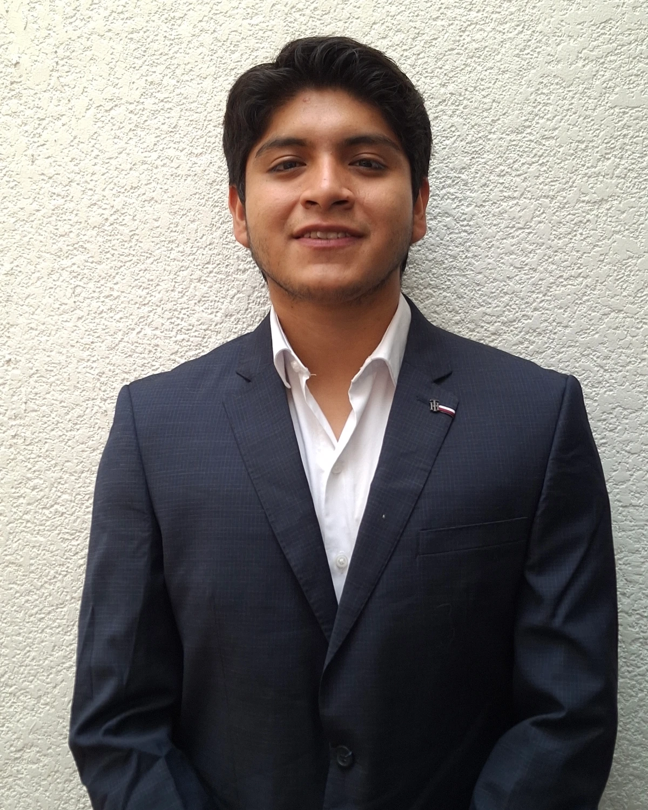
Quiénes somos
22 años, último semestre de la Licenciatura en Física y Matemáticas, involucrado en causas sociales desde los 15.
En la ONG SELIDER Estado de México dirigió y participó en proyectos asistencialistas.
El asistencialismo nace de intenciones nobles y puede impactar vidas, pero no resuelve los problemas de una sociedad: los insumos se acaban, las donaciones son finitas, hay problemas imposibles de resolver en un día e incluso puede causar efectos negativos en la comunidad que pretende beneficiar.
Proyecto piloto
Prótesis de mano mioeléctricas: nuestro proyecto piloto une electrónica, manufactura aditiva y diseño centrado en las personas.
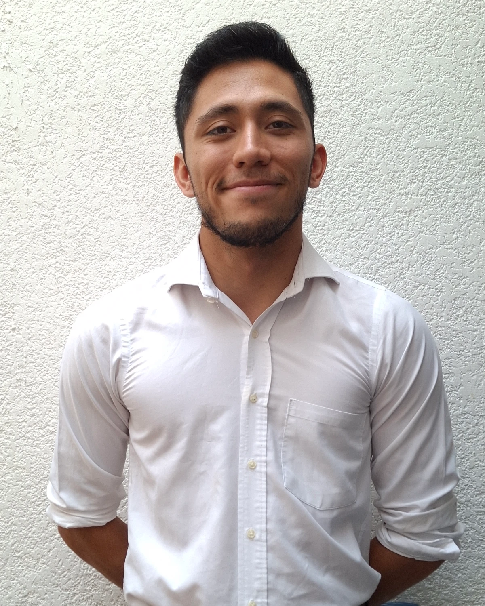
El músculo técnico y organizacional del proyecto: quienes hacen que las cosas sucedan y transforman las buenas ideas en un impacto real medible.
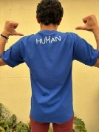
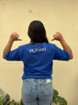
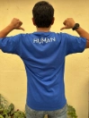
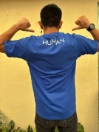
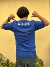
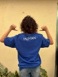
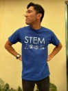
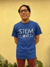
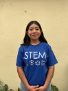
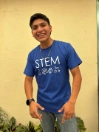
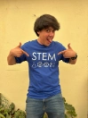
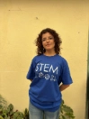
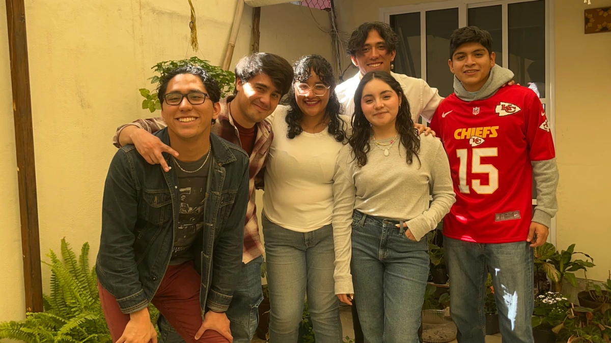
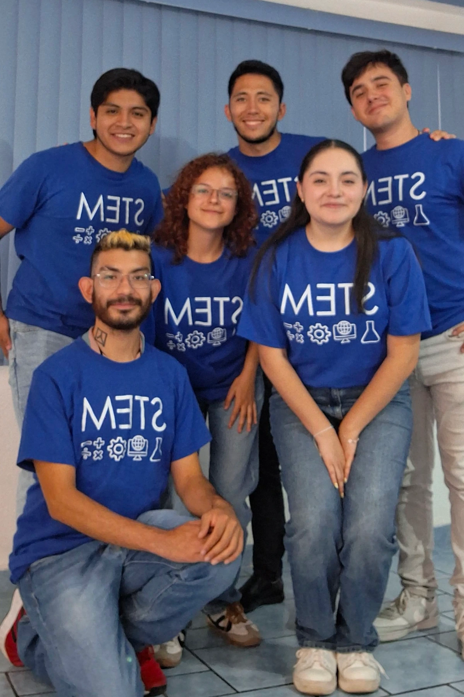
Segundo proyecto
Nuestro segundo proyecto llevará la agricultura a los espacios de la ciudad. ¿Quieres formar parte?
Únete al equipoFormulario disponible próximamente.
Súmate
Tu apoyo hace posible el desarrollo de este ecosistema de ciencia, tecnología e impacto social.
Para realizar un donativo, por favor escríbenos. Te responderemos con los datos necesarios.
human.stem.org@gmail.com